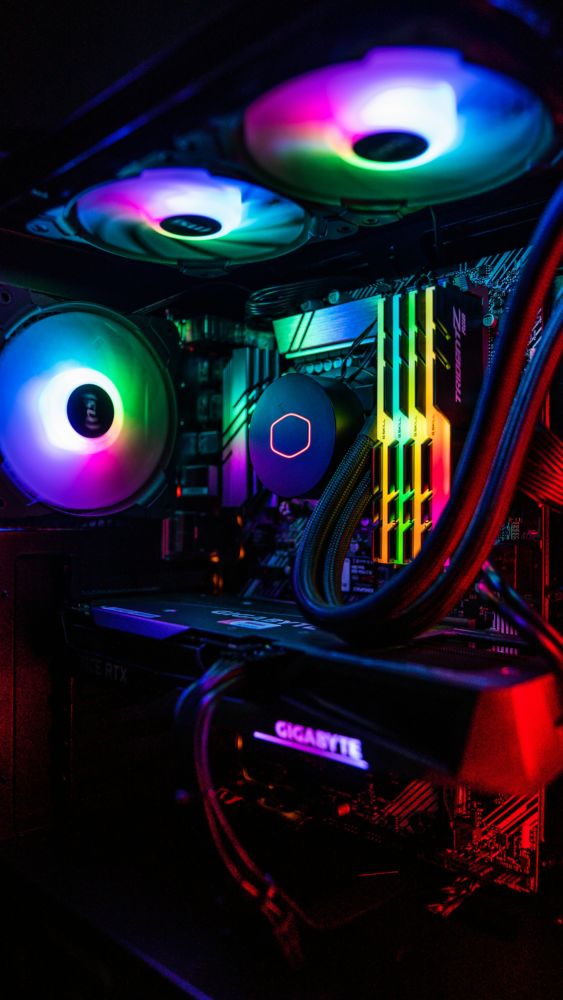
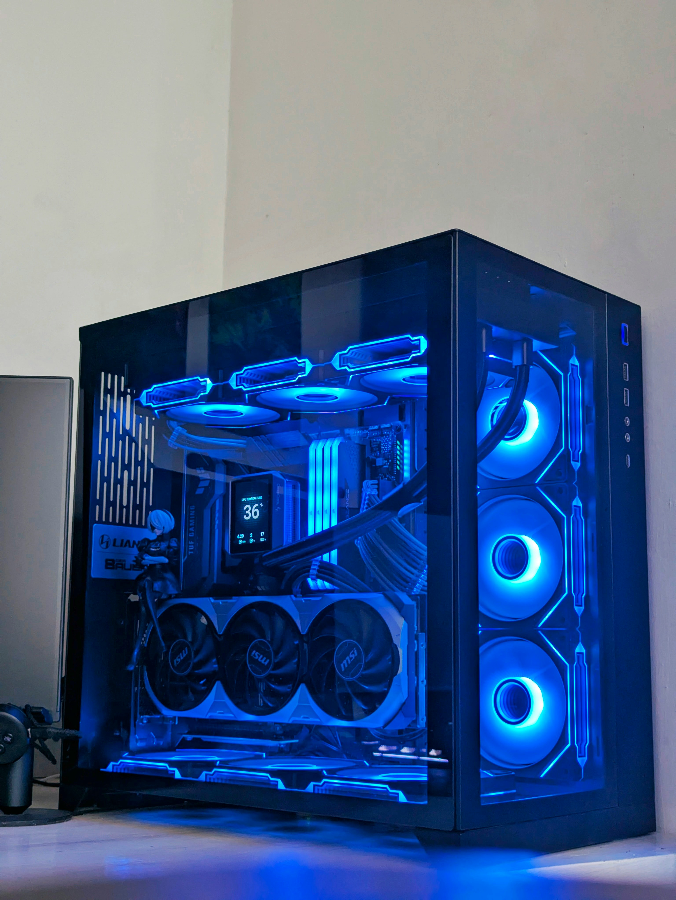
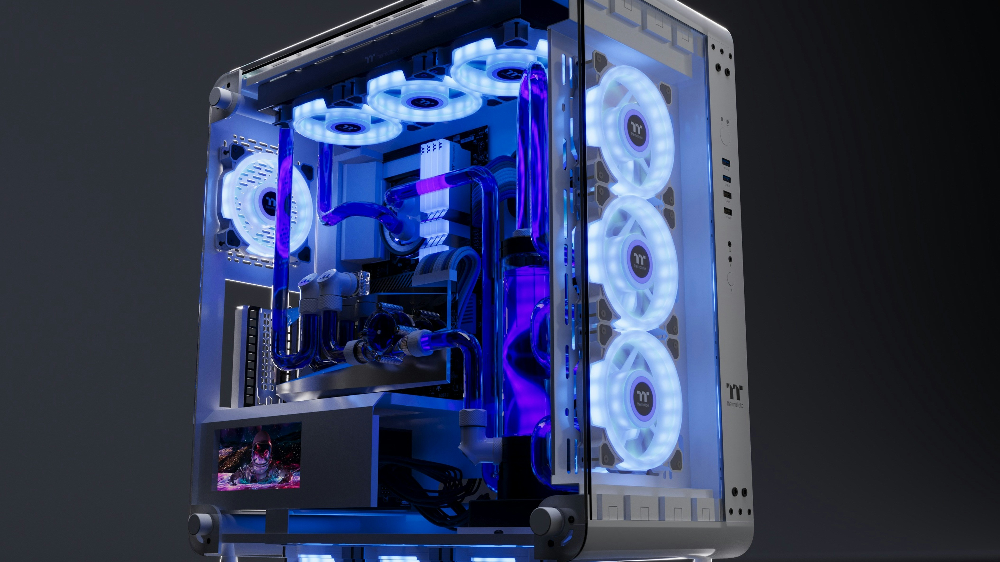

Learn How to Build a Custom PC
The benefits of building your own PC cannot be overstated. You have final say on which parts you need or want. You can cut costs in certain areas to add more performance and you can have a sense of pride in it, instead of just having a cookie-cutter PC sitting on your desk. You also have a tool available for comparing part choices and viewing their compatibility by using PCPartPicker.



Where to Start Your PC Build
The first step is to learn what all the components are and what they do. Then we move on to assembly, and then finally maintenance and troubleshooting.